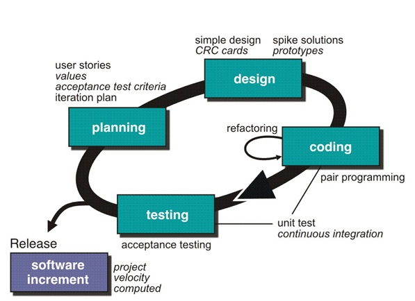

Extreme Programming (XP) on üks tähtsamaid Agiilsete mudelite tarkvaraarendusraamistikke, mille eesmärk on parandada tarkvara kvaliteeti ja reageerida kiiremini kliendi nõudmistele. See keskendub pidevale koostööle, korduvatele arendustele ja kiirele tagasisidele.
Kliendid kirjeldavad oma vajadusi kasutajalugude kaudu. Iga kasutajaloo jaoks arvutatakse vajalik pingutus ja planeeritakse väljalasked vastavalt prioriteedile.
Loob ainult olulise disaini, mida on vaja praeguste kasutajalugude jaoks. Disain hoitakse lihtsa ja arusaadavana, et see toetaks süsteemi arhitektuuri mõistmist.
XP soodustab paarisprogrammeerimist, kus kaks arendajat töötavad koos ühe töökohaga. Töö hõlmab ka testide kirjutamist enne koodi loomist ja pidevat koodi integreerimist.
XP rõhutab nii ühik- kui ka vastuvõtuteste, et tagada tarkvara kvaliteet ja vastavus kliendi nõudmistele.
Kliendilt saadav tagasiside aitab arendustiimil mõista kliendi vajadusi ja teha vajalikud muudatused.

| Head | Vead |
|---|---|
| Kiire tagasiside aitab probleeme varakult tuvastada | Ei pruugi hästi sobida suurtele projektidele |
| Soodustab tihedat koostööd arendajate ja klientide vahel | Nõuab kõrget distsipliini ja kaasatust |
| Paindlik muutuvate nõuete korral | Kõrge kommunikatsioonikulu väikse tiimi korral |